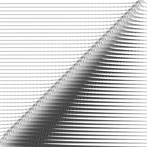
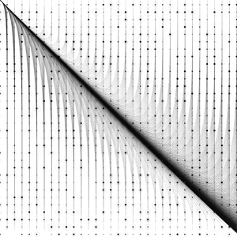

Home
/
Modeling & Visualization
/
Web Design & Graphic Design
/
Research
/
About
Contact


Back to previous page
Graphic Fields (2012)
The work on this page is released under Attribution-ShareAlike 3.0 licence
CC-BY-SA
Tool:
processing
Script—
< back